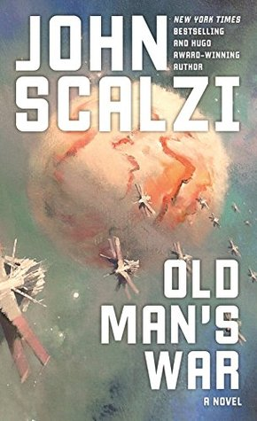
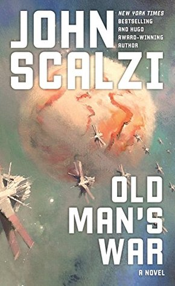

My Favorite Books
| Title | Author | Cover/Link |
|---|---|---|
| The Name of the Wind | Patrick Rothfuss | |
| The Way of Kings | Brandon Sanderson | |
| Old Man's War | John Scalzi |  |
| The Art of Impossible | Steven Kotler |
Avatar is about protecting a world that is better than our own, and a people more aligned with nature than technology. What may be the coolest concept from the movie is the native populations' ability to join with the people, creatures, and planet around them; mind, body, and soul in a very real sense.
IMdBOne of my favorite bands is Unleash the Archers. They're an escapist metal band that tells stories in their songs and mashes the story genres in fun ways.
Unleash the Archers Tour Dates| Title | Author | Cover/Link |
|---|---|---|
| The Name of the Wind | Patrick Rothfuss | |
| The Way of Kings | Brandon Sanderson | |
| Old Man's War | John Scalzi |  |
| The Art of Impossible | Steven Kotler |